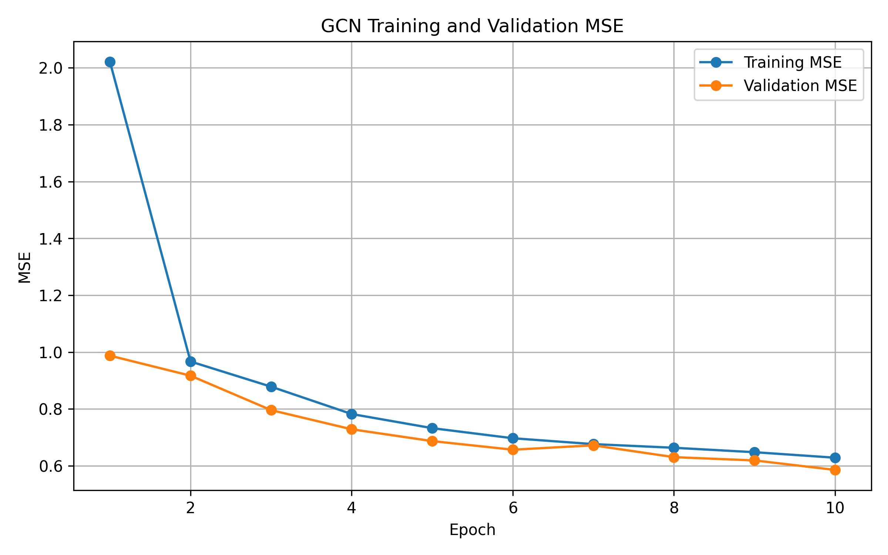
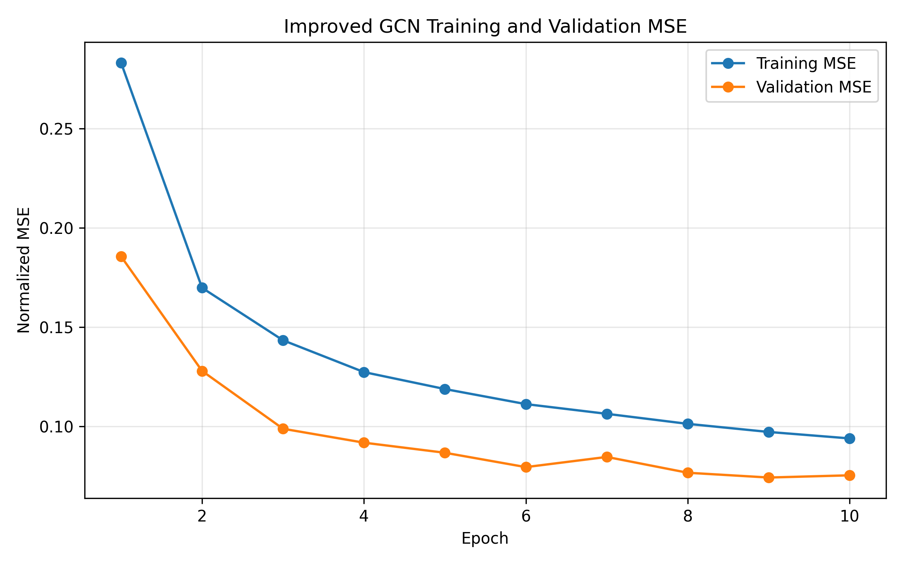
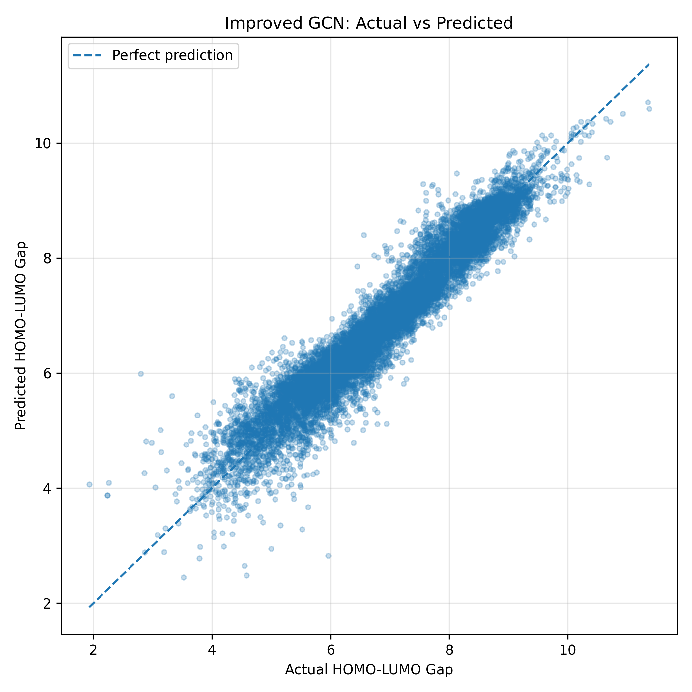
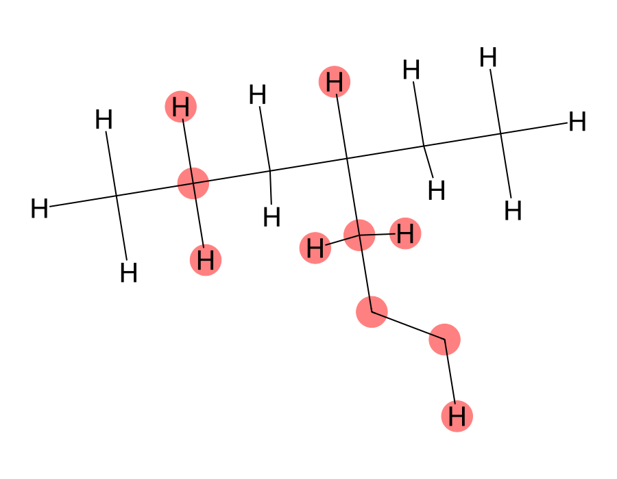

Capstone research workspace · MolecularAI
Predicting molecular HOMO‑LUMO gaps with graph neural networks.
Atoms are nodes, bonds are edges. We train GCN, GraphSAGE and GAT models on QM9, quantify how sure each prediction is with Monte‑Carlo Dropout, and show which atoms drive the output.
Dataset & split
QM9
≈130k small organic molecules with quantum‑chemical properties. The prediction target is the HOMO‑LUMO gap (QM9 target index 4), measured in electron‑volts.
Reproducible 80 / 10 / 10 split
Random seed 42. The scaler (mean/std of the target) is fit on the training split only.
Model benchmark
Test‑set results on 13,084 held‑out molecules. Lower error and higher R² are better.
R² by model
MAE and RMSE (eV)
| Model | MSE | RMSE | MAE | R² | Architecture |
|---|
Training curves
10 epochs, Adam, learning rate 0.001, batch size 64. Errors here are in standardised target units.



Uncertainty quantification
Monte‑Carlo Dropout: dropout stays on at inference and the model is sampled 50 times per molecule. The mean is the prediction and the standard deviation is the uncertainty.
Uncertainty vs absolute error
2,000 randomly sampled test molecules. Line: mean error per uncertainty quintile.
Error rises with uncertainty
Test set split into five equal groups by predicted uncertainty.
Selective prediction
MAE if only the most‑confident share of molecules is kept.
Calibration
Share of molecules whose error falls within k·σ, against what a well‑calibrated Gaussian would give.
Explainability
Gradient‑based atom importance: how strongly the predicted gap changes when each atom's input features change.


How it works
- Run the trained GCN on one molecule with gradients enabled on the node features.
- Back‑propagate the (standardised) predicted gap to each atom's 11 input features.
- Take the L2 norm of each atom's gradient vector as its importance score.
Caveat: the drawing is rebuilt from atomic numbers and connectivity with every bond drawn as single, so bond orders are not shown. Importance is a local sensitivity measure, not a causal chemistry claim.
Error analysis
Error by molecule size
Mean absolute error per atom count (bars) with number of molecules (line).
Signed error distribution
Prediction − target, in eV. Centred near zero, so there is almost no systematic bias.
Twenty hardest test molecules
Difficulty score = 0.5 × error (scaled by the maximum error) + 0.5 × uncertainty (scaled by the maximum uncertainty).
| # | Atoms | Target | Prediction | Error | Uncertainty | Difficulty |
|---|
Test‑set explorer
Browse all 13,084 test predictions. Click a row to see its prediction interval.
| ID | Atoms | Target | Predicted | |Error| | σ |
|---|
Select a molecule to inspect it.